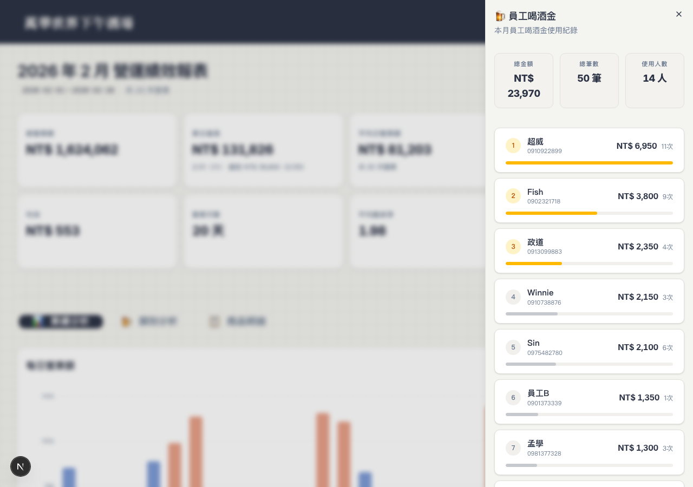
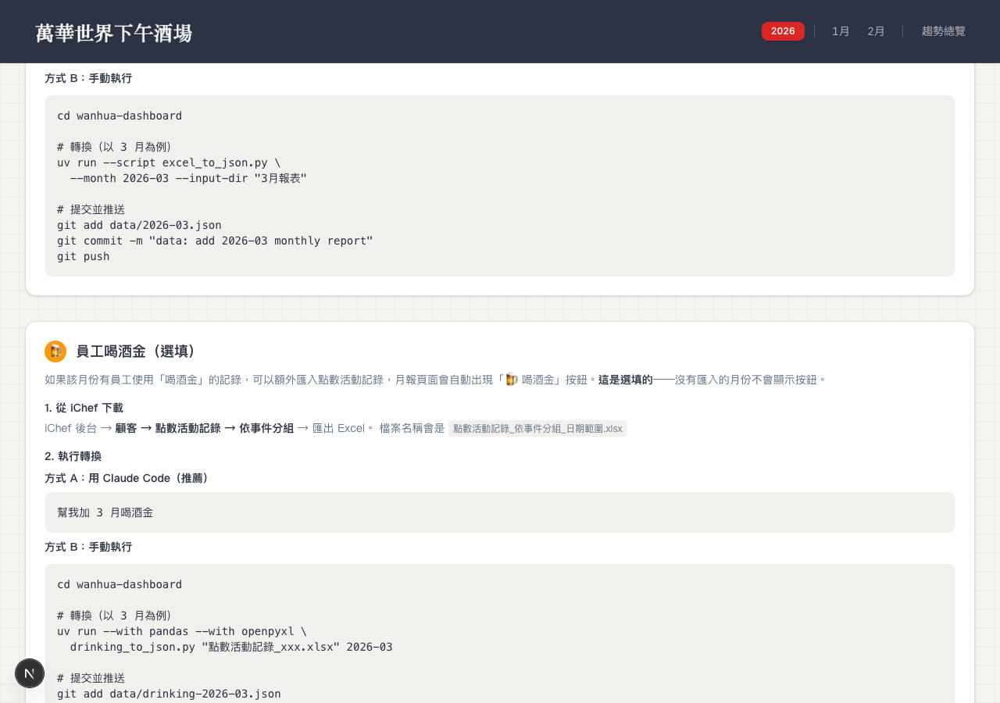

員工喝酒金追蹤系統
從一張 POS 匯出的 Excel 出發，用 Claude Code 建立完整的員工喝酒金追蹤功能——資料轉檔腳本、前端面板、自動化 Skill、操作教學頁面，全部在一個 session 內完成。

為什麼要做這件事
店裡有個員工福利：每位員工有「喝酒金」額度，可以在店內消費。這些紀錄存在 iChef POS 系統的「點數活動記錄」裡，但一直沒有被整理過。
我想做的很簡單：
- 每個月看一眼，誰喝了多少、一共花了多少
- 不需要額外開 Excel，直接在既有的月報儀表板裡看到
但這代表要處理一個全新的資料源——跟月報用的 6 個 Excel 完全不同的格式，而且裡面存的是手機號碼不是員工姓名。
技術選型
| 工具 | 選的理由 |
|---|---|
| Python (pandas) | 已經有月報的 excel_to_json.py 先例，用同樣的思路處理新 Excel |
| JSON 資料格式 | 跟月報一樣放在 data/ 目錄，Next.js SSG 直接讀取 |
| shadcn/ui Sheet | 員工出勤已經用了右側滑出面板，喝酒金用同樣的 UI 模式 |
| Claude Code Skill | 把轉檔流程包成自然語言指令，不用記命令 |
推進方式
先讓 AI 看原始資料：我把 iChef 匯出的 Excel 檔案直接丟給 Claude Code，讓它理解欄位結構。關鍵資訊只有兩欄：G 欄（用點點數 = 金額）和 J 欄（顧客手機號碼 = 員工）。
手機號碼 → 姓名的問題：Excel 裡只有手機號碼，不是名字。Claude 建議建立一個 JSON 對照表（staff-phone-map.json），我提供了 13 位員工的姓名對應，另外 4 個未知號碼先標記為「員工 A–D」。
把功能做成 optional 的：不是每個月都有喝酒金紀錄。Claude 把整個功能設計成：有 drinking-YYYY-MM.json 就顯示按鈕，沒有就不顯示。這個判斷放在 server component 層，乾淨利落。
驗證也跟以前一樣：Playwright 截圖 → 確認 UI 正確 → Build 通過 → Git push → Vercel 自動部署。
- Python 轉檔腳本撰寫（讀 Excel、解析、輸出 JSON）
- TypeScript 型別定義 + 資料讀取函式
- React Sheet 面板元件（排行榜 UI）
- Build 驗證 + Playwright 截圖測試
- Skill 檔案撰寫 + Guide 頁面更新
- Git commit + push 自動化
- 需求定義：「我要追蹤員工喝酒金」
- 業務資料：13 位員工的姓名 ↔ 手機對照
- iChef 後台匯出 Excel 檔案
- UI 微調請求（「電話列在名字下方」）
- 最終視覺確認
踩到的坑，讓我更懂的事
staff-phone-map.json 和 drinking-2026-02.json 後，build 失敗——系統嘗試產生 /month/staff-phone-map 路由。根本原因：getAvailableMonths() 把所有 .json 檔案都當成月份資料。
uv run --script 跑得動，但新寫的 drinking_to_json.py 找不到 pandas。根本原因：兩種腳本的依賴宣告方式不同。月報用 PEP 723 inline metadata，喝酒金的沒有。
最終樣貌
月報頁面的 KPI 卡片下方，「員工出勤」按鈕旁邊多了一個「🍺 喝酒金」按鈕。點開後右側滑出面板，內容包含：
- 3 張 KPI 卡片：總金額、總筆數、使用人數
- 員工排行榜：依金額排序，Top 3 用金色高亮，每張卡片顯示姓名、電話號碼、消費金額、次數、進度條
沒有喝酒金資料的月份（例如 1 月），按鈕根本不會出現，頁面跟以前一模一樣。
另外，guide 教學頁面也新增了「員工喝酒金（選填）」section，說明匯入流程。

如果繼續往下
- 可以加入月度趨勢：跨月比較誰喝最多、總額是否在預算內
- 可以設定額度上限警示：某人某月快超過額度時自動標紅
- 未知手機號碼可以做互動式更新：在面板裡直接填名字，自動寫回對照表
- 喝酒金資料也可以整合進趨勢總覽頁面，作為營運成本的一部分來追蹤
Takeaway
複製既有模式是最快的開發策略。這個專案已經有「Excel → Python → JSON → Next.js → Sheet 面板」的完整管線，喝酒金功能只是把同一條路再走一遍。Claude Code 因為有完整的 CLAUDE.md 上下文，知道每一步該怎麼做、該用什麼工具、該避開什麼坑。
這次用的是「漸進定義型」——先描述需求概念（「我想追蹤員工喝酒金」），讓 AI 提出方案，再逐步補充細節（姓名對照表、電話號碼顯示、Skill 自動化）。不需要一開始就把所有需求寫清楚。
適用於任何「有 POS 系統匯出 Excel，想做成視覺化儀表板」的情境。關鍵條件：已經有運作中的 dashboard 架構、新功能可以套用既有的資料管線模式、AI 有完整的專案上下文。
不適用：從零開始建 dashboard 時，複雜度會高很多。這次之所以快，是因為站在 14 個 session 的基礎上。
起手式 1：「我有一份 [某系統] 匯出的 Excel，格式是這樣（附檔案），你能幫我轉成 JSON 嗎？」——讓 AI 先理解資料結構。
起手式 2：「我的專案已經有 [某功能] 的資料管線，新功能可以用同樣的模式嗎？」——讓 AI 判斷能否複製既有架構。